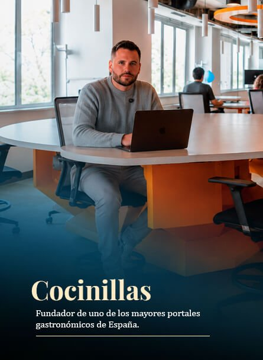
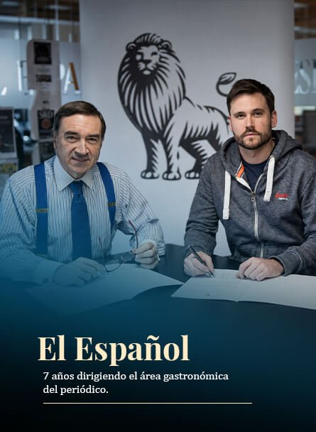
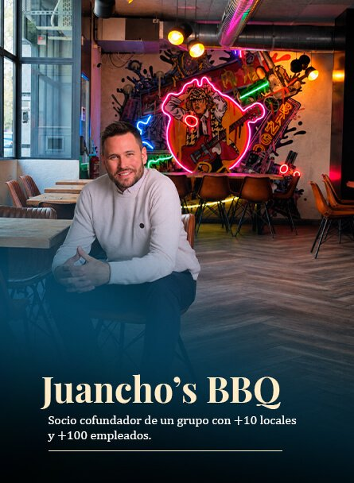
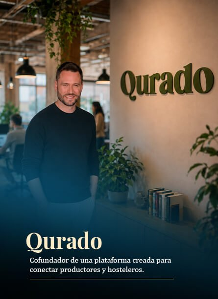
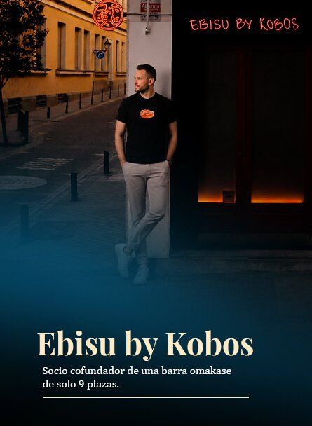
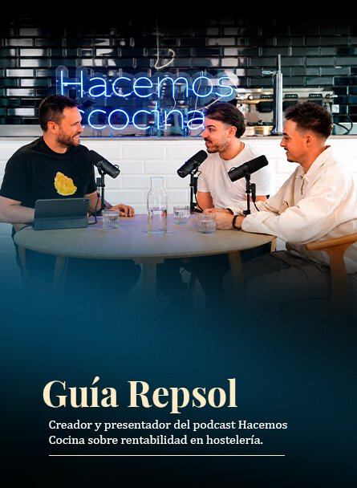
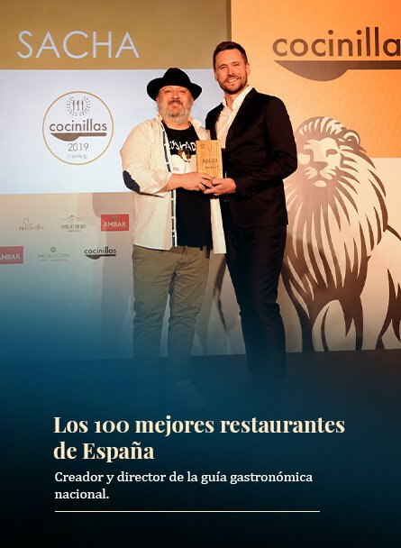
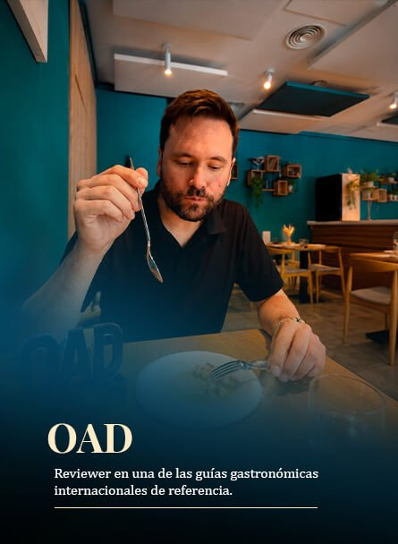
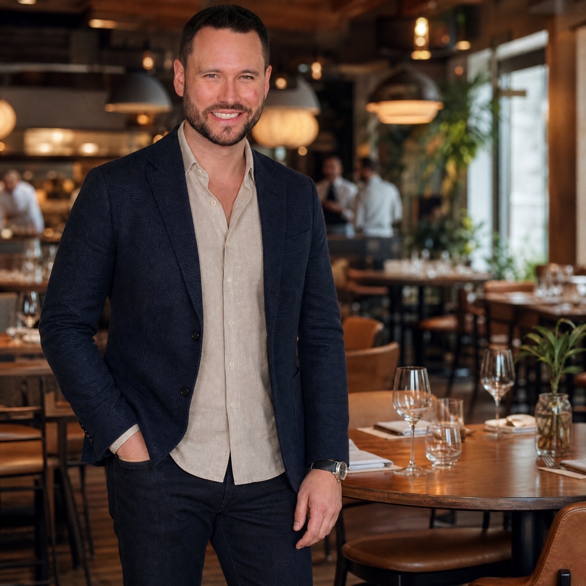

Venta realizada con tarjetaValor: 9,90 €Hotmart
Venta realizada con tarjetaValor: 9,90 €Hotmart
Hay una razón por la que trabajas más y ganas menos. Está en este vídeo.
Facturan más que nunca y, aun así, ganan cada vez menos
La fuga de rentabilidad que no aparece en ninguna hoja de cálculo
En pocos minutos, Danny Salas te explica por qué la mayoría de los restaurantes facturan más que nunca y, aun así, ganan cada vez menos —y cuál es la fuga de rentabilidad que no aparece en ninguna hoja de cálculo.
Workshop online en directo
21-22 de septiembre · De 10:00 a 14:00 (hora de España)
Te voy a enseñar cómo ganar más dinero con tu restaurante.
Durante 2 días vas a aprender a detectar fugas de rentabilidad, mejorar decisiones de carta, precios, producto, operaciones y marca, y construir un negocio que no dependa solo de trabajar más horas o llenar más mesas.
- ✦ Detectar dónde se está escapando el dinero en tu restaurante.
- ✦ Diseñar una carta que venda mejor y deje más margen.
- ✦ Usar el pricing para mejorar ticket medio, percepción de valor y comportamiento del cliente.
- ✦ Identificar el verdadero cuello de botella de tu negocio.
- ✦ Salir con un plan de acción concreto para los próximos 90 días.
21-22 de septiembreOnline y en directoSolo 9,90 €Plan de 90 días
Quiero reservar mi plaza
Venta realizada con tarjetaValor: 9,90 €Hotmart
¿Qué vas a conseguir con este workshop?
En dos días vas a trabajar sobre las decisiones que más afectan a la rentabilidad real de un restaurante:
CartaPreciosCostesProductoOperacionesMarca
DE RESTAURANTE A NEGOCIO RENTABLE2 DÍAS








No vas a aprender solo “conceptos de rentabilidad”. Vas a aprender a mirar tu restaurante como un sistema y a tomar mejores decisiones sobre lo que de verdad mueve el beneficio.
Algunos proyectos que han construido esta mirada.✦✦✦
Pero este workshop no nace solo de esos proyectos: nace de años entrando en restaurantes, hablando con propietarios y analizando sus cartas, precios y decisiones.
SOCIO COFUNDADOR
Juancho’s BBQ
Un grupo de restauración con más de 10 locales y más de 100 empleados.
+10 locales · +100 empleados
SOCIO COFUNDADOR
Ebisu by Kobos
Una barra omakase de solo 9 plazas.
Solo 9 plazas
CREADOR Y PRESENTADOR
Guía Repsol
Podcast Hacemos Cocina sobre rentabilidad en hostelería.
Rentabilidad en hostelería
COFUNDADOR
Qurado
Una plataforma creada para conectar productores y hosteleros.
Productores + hosteleros
FUNDADOR
Cocinillas
Uno de los mayores portales gastronómicos de España.
Top 3 de España
7 AÑOS AL FRENTE
El Español
Dirigiendo el área gastronómica del periódico.
Área de gastronomíaCREADOR Y DIRECTOR
Los 100 mejores restaurantes de España
La guía gastronómica nacional de Cocinillas.
Guía nacionalJURADO
Madrid Fusión
Jurado de Chef Revelación.
Chef RevelaciónREVIEWER
OAD
Una de las guías gastronómicas internacionales de referencia.
Referencia internacionalMetodología propia
Siete bloques para mirar tu restaurante como un negocio.
No es un curso clásico de números, escandallos y hojas de Excel. Es una metodología propia para cambiar la forma en la que miras tu restaurante y empezar a tomar decisiones como empresario hostelero.
Cambiando la mirada...14%
EL PUNTO DE PARTIDA
“Tengo un restaurante y quiero convertirlo en un negocio rentable.”
EL BLOQUE FINAL
Salir con un plan de acción claro
- Las diez Reglas Invisibles de los restaurantes rentables
- Qué errores evitaría si hoy volviera a abrir
- Qué decisiones tienen más impacto a corto, medio y largo plazo
- Cómo pasar de la inspiración a la acción
- Qué hacer durante los próximos 90 días
Y además:ingeniería de menúpsicología del preciola trampa de la liquidezcostes invisiblestop of mind
El programa, bloque a bloque
Qué vas a trabajar dentro de “De restaurante a negocio rentable”
Toca un bloque para abrirlo y explora el programa completo.
01Cambiar la forma de mirar tu restaurante+
Antes de hablar de números, carta, precios o marketing, vamos a trabajar el cambio más importante: dejar de mirar tu restaurante solo como una cocina, una sala o una lista de tareas pendientes, y empezar a verlo como un negocio completo.
Vas a entender por qué muchos hosteleros intentan resolver el problema equivocado, por qué mejorar el producto no siempre mejora el negocio y qué tienen en común los restaurantes que consiguen ser rentables de verdad.
Vas a trabajar:
- Por qué cocinar bien ya no es suficiente.
- La diferencia entre tener un restaurante y dirigir un negocio.
- Cómo pensar como empresario hostelero.
- Qué son las Reglas Invisibles de los restaurantes rentables.
- Por qué muchas decisiones aparentemente pequeñas pueden tener un impacto enorme en la rentabilidad.
02Detectar dónde está realmente el problema+
Muchos restaurantes no fallan porque tengan mala comida, mala sala o mala comunicación. Fallan porque no saben identificar cuál es su verdadero cuello de botella.
En este bloque vas a aprender a mirar tu restaurante como un sistema: ingresos, costes, operaciones, equipo, carta, experiencia, marca y tiempo del propietario. El objetivo es que puedas dejar de apagar fuegos y empezar a ver con claridad dónde se está bloqueando el crecimiento o la rentabilidad.
Vas a trabajar:
- Las dos caras de cualquier restaurante: la operación y el negocio que la sostiene.
- Cómo identificar el verdadero cuello de botella.
- Qué tareas te roban tiempo pero no hacen avanzar el negocio.
- Dónde se pierde dinero, margen y foco.
- Cómo priorizar antes de optimizar.
03Aprender a ganar dinero, no solo a facturar más+
Facturar más no significa ganar más. De hecho, muchos restaurantes crecen en ventas mientras pierden margen, liquidez y control.
En este bloque bajaremos a la parte más incómoda, pero también más importante: entender cómo se gana dinero de verdad en hostelería. No desde la teoría financiera, sino desde decisiones concretas de carta, compras, procesos, equipo, gramajes, mermas, proveedores y operaciones.
Vas a trabajar:
- Por qué facturación y beneficio no son lo mismo.
- La trampa de la liquidez: cuando entra dinero, pero el negocio no mejora.
- Por qué “tener gestoría” no significa tener control financiero.
- Cómo detectar costes invisibles que destruyen margen.
- Cómo pensar en sistemas y no en productos aislados.
- Cuándo ahorrar mejora el negocio y cuándo lo empeora.
- Cómo optimizar sin bajar la calidad ni traicionar tu propuesta.
04Diseñar una carta que venda mejor y deje más margen+
La carta no es solo una lista de platos. Es una herramienta de venta, de posicionamiento y de rentabilidad.
En este bloque veremos cómo una carta puede empujar al cliente hacia unas decisiones u otras, cómo afectan los precios al ticket medio real y por qué no todos los platos merecen el mismo esfuerzo, la misma visibilidad ni la misma inversión.
Vas a trabajar:
- Cómo saber qué platos sostienen realmente tu negocio.
- Qué diferencia hay entre ticket medio teórico y ticket medio real.
- Cómo aplicar Pareto a tu carta.
- Cómo usar ingeniería de menú sin convertir tu restaurante en una hoja de Excel.
- Cómo afecta el food cost a tus decisiones.
- Por qué el food cost no debe ser el único criterio.
- Cómo utilizar la psicología del precio.
- Cómo aplicar la Ley de Omnes para ordenar mejor tu propuesta.
- Cómo dirigir el comportamiento del cliente a través del pricing.
05Construir un negocio que el cliente quiera pagar+
Un restaurante rentable no es solo el que controla costes. También es el que consigue que el cliente perciba suficiente valor como para pagar lo que el negocio necesita cobrar.
En este bloque trabajaremos el producto core, el posicionamiento, el precio, la experiencia y la percepción de valor. Porque no se trata solo de vender más barato, sino de construir una propuesta por la que el cliente entienda por qué merece la pena pagar.
Vas a trabajar:
- Cómo identificar tu producto core.
- Dónde debes invertir más.
- Dónde nunca deberías ahorrar.
- Por qué en tu producto principal se compite hacia arriba, no hacia abajo.
- Cómo el precio construye marca.
- Por qué abrir con el precio correcto puede cambiar la percepción del negocio.
- Cómo evitar entrar en guerras de descuentos.
- Por qué el descuento puede darte ventas hoy, pero debilitar tu marca mañana.
- Cómo diseñar una experiencia completa, no solo un producto.
06Conseguir que el cliente vuelva, te recuerde y te elija+
El objetivo de un restaurante no es gustar una vez. Es ocupar un lugar en la cabeza del cliente.
En este bloque veremos por qué muchos restaurantes hacen bien muchas cosas, pero no consiguen ser recordados. Y si el cliente no te recuerda, no vuelve, no te recomienda y no piensa en ti cuando tiene que elegir.
Vas a trabajar:
- Qué significa estar en el top of mind del cliente.
- Por qué gustar no es suficiente.
- Cómo construir una propuesta más fácil de recordar.
- Qué hace que un restaurante sea recomendable.
- Cómo conectar producto, experiencia, precio y comunicación.
- Por qué la marca vende durante años y el descuento solo vende hoy.
07Salir con un plan de acción claro+
La hostelería ha cambiado. El cliente compara más, exige más, se informa más y tiene muchas más alternativas. Por eso, los restaurantes que sobrevivan no serán necesariamente los que cocinen mejor, sino los que entiendan mejor su negocio.
En este bloque final ordenaremos las grandes ideas del workshop y las convertiremos en decisiones concretas para tu restaurante.
Vas a trabajar:
- Las diez Reglas Invisibles de los restaurantes rentables.
- Qué errores evitaría si hoy volviera a abrir un restaurante.
- Qué decisiones tienen más impacto a corto, medio y largo plazo.
- Cómo pasar de la inspiración a la acción.
- Qué hacer durante los próximos 90 días para mejorar tu negocio.
Convierte tu restaurante en un negocio rentable, sin dejar de ser hostelero.
-
Gana más dinero
sin
trabajar más horas -
Mejora tu margen
sin
llenar más mesas -
Decide como empresario
sin
hojas de Excel interminables -
Empieza hoy
sin
ser experto en números.La metodología te guía.
EN DIRECTO
Dos días de trabajo intensivo.
Online y en directo, de 10:00 a 14:00 (hora de España). Y si no puedes asistir, tendrás acceso a la grabación durante 365 días.
21 y 22 de septiembre8 horas prácticasGrabación 365 días
Quiero reservar mi plaza →
PLAZAS LIMITADAS
Una pequeña inversión para tomar mejores decisiones en tu restaurante.solo 9,90 €.
Por menos de lo que muchos restaurantes pierden en un solo pedido mal calculado, tendrás acceso a una formación práctica para identificar fugas de dinero, mejorar la gestión y aumentar la rentabilidad de tu negocio.

PLAZA INMEDIATA · PAGO ÚNICO
- ✓Acceso a las dos jornadas online y en directo.21 y 22 de septiembre, de 10:00 a 14:00 (hora de España).Incluido
- ✓8 horas de formación práctica con Danny Salas.Incluido
- ✓Estrategias de gestión, marketing y rentabilidad.Incluido
- ✓Ejemplos y aprendizajes de negocios reales.Incluido
- ✓Acceso a la grabación durante 365 díasIncluido
- ✓Material de apoyoIncluido
Precio especial para las primeras plazas39,90 €hoy por solo 9,90 €
✦✦De 39,90 € por:SOLO9,90 €PRIMER LOTE · EL SEGUNDO LOTE SERÁ A 59,90 €
QUIERO RESERVAR MI PLAZA →🔒 Compra segura⚡ Plaza confirmada al momento✉ Acceso y recordatorios por WhatsApp y correo
¿Quién imparte
el workshop?
Danny Salas es uno de los profesionales más reconocidos del sector gastronómico en España. Su misión: que dejes de gestionar por intuición y decidas con visión empresarial.
✦ Casi dos décadas analizando la evolución de la hostelería✦ Asesor de restaurantes, grupos de restauración y marcas líderes✦ Parte de proyectos de referencia: Juancho’s BBQ y Ebisu by Kobos✦ Estrategia, negocio, marca y visión de mercado✦ Restaurantes más rentables y preparados para el futuro
DANNY SALASCASI DOS DÉCADAS EN HOSTELERÍA
FAQ
Preguntas frecuentes.
Toca una pregunta y la respuesta se abre al momento.
01¿Este Workshop es para cualquier tipo de restaurante?+
Sí. El contenido está pensado para propietarios y gestores de restaurantes, independientemente del tipo de cocina, el tamaño del negocio o los años que lleven abiertos.
02¿Necesito tener conocimientos de gestión o finanzas?+
No. Todo el Workshop está explicado de forma práctica y sencilla para que puedas aplicar las estrategias a tu restaurante desde el primer día.
03¿El Workshop es online o presencial?+
Es un Workshop 100 % online y en directo, por lo que podrás participar desde cualquier lugar.
04¿Qué ocurre si no puedo asistir en directo?+
Tendrás acceso a la grabación durante 365 días, por lo que podrás ver el contenido cuando mejor te venga.
05¿Cuánto dura el Workshop?+
El Workshop se desarrollará durante dos días, con sesiones intensivas enfocadas únicamente en contenidos prácticos y aplicables.
06¿Hasta cuándo estará disponible el precio actual?+
El precio corresponde al lote vigente. Una vez se complete el número de plazas de ese lote, el importe aumentará automáticamente al siguiente nivel.
07¿Cómo sé si este Workshop es para mí?+
Si eres propietario de un restaurante y quieres dejar de trabajar cada vez más para ganar cada vez menos, este Workshop te ayudará a entender cómo convertir tu restaurante en un negocio más rentable, organizado y preparado para crecer.
El coste de seguir tomando decisiones sin controlar los números puede ser mucho mayor que 9,90 €.
Reserva tu plaza y descubre qué debes cambiar.
Reserva tu plaza y descubre qué debes cambiar para construir un restaurante más rentable, organizado y preparado para crecer.
Quiero reservar mi plaza →